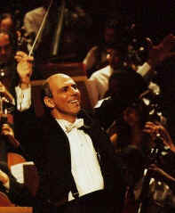
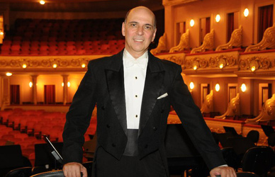

|
 |
Yeruham
Scharovsky |
|
Born in Buenos Aires, Argentina, he has received his early musical education in flute, double-bass, composition and conducting with teachers from the Buenos Aires National Conservatory of Music and the Teatro Colon Opera House. In Israel, he graduated from the Jerusalem Rubin Academy of Music studying under Professor Mendi Rodan. |
|
|
Since then, he has conducted in Israel, Finland, Sweden, Germany, Denmark, Russia, Lithuania, Italy, France, Argentina, Dominican Republic, Chile and Brazil to unanimous acclaim from audiences and critics alike. He has conducted, among other ensembles, the Israel Philharmonic Orchestra, the Jerusalem Symphony Orchestra, the Israel New Opera Orchestra, the Moscow Philharmonic Orchestra, the Finnish National Opera Orchestra, the Sweden National Opera Orchestra, the Cannes Chamber Orchestra, the Riga Philharmonic Orchestra, the St. Petersburg Philharmonic Orchestra, the Marcheggiana Philharmonic Orchestra, the Teatro Colon of Buenos Aires Philharmonic and Opera Orchestras, the Sao Paulo Theatro Municipal Symphony Orchestra, the Santiago de Chile Symphony Orchestra and the Brazilian Symphony Orchestra of Rio de Janeiro. |
|
In
1990 Yeruham Scharovsky was chosen by Maestro Zubin Mehta to receive the
Israeli "Young Artist of the Year Award" (Francoise Schapira)
award. Consequently, he was privileged to conduct the Israel
Philharmonic Orchestra in a gala concert, as well as all of the major
orchestras in Israel both in concerts and recording sessions.
In the same year he conducted for the first time the Jerusalem Symphony Orchestra (Israel Broadcasting Authority). Since then, he has been conducting this orchestra frequently in concerts and recording sessions, including a successful South America concert tour, held in June 1998 in some of the most important cities of Brazil and Uruguay. In November 1991 Maestro Scharovsky was invited for a concert tour in the former USSR, conducting the Moscow Philharmonic, the Riga Philharmonic and the Yaroslavel Philharmonic Orchestras as the first Israeli conductor ever to do so. Maestro Scharovsky was also chosen to conduct the opening concert of the new Golda Meir Arts Center in Tel-Aviv, as well as one of its first productions, Nabucco by Verdi, with the participation of singers such as Ghena Dimitrova, Leo Nucci, Feruccio Furlanetto and Pahta Burdchalaze. Between 1991 to 1995, he was the Artistic Director and Chief Conductor of the Ra’anana Symphonette Orchestra in Israel. Under his baton the orchestra became one of Israel’s most popular symphonic ensembles, performing hundreds of subscriptions concerts both for adults and for youth, making numerous radio and TV recordings, and undertaking three concerts tours of France and Germany. In April 2000, he shared a series of concerts with Maestro Lorin Maazel in the Philharmonic Hall in Munich, Germany, conducting the Jerusalem Symphony Orchestra together with the Bavarian Radio Orchestra in concerts dedicated to the City of Jerusalem. Alongside his international conducting career, Maestro Scharovsky is the Director of the Kfar-Saba Music Foundation, which serves 3000 music students. As an extension of his educational activities, Mr. Scharovsky undertook a series of thirty Israeli television music programs, which he also conducted. Maestro Scharovsky and the Brazilian Symphony Orchestra of Rio de Janeiro have recently recorded a CD including Overtures and Preludes by the Brazilian composer Carlos Gomes, as well as a CD of a live concert including Rimsky Korsakov’s Scheherezade and Beethoven’s Piano Concerto No. 4 with Nelson Freire as soloist. |
|
 |